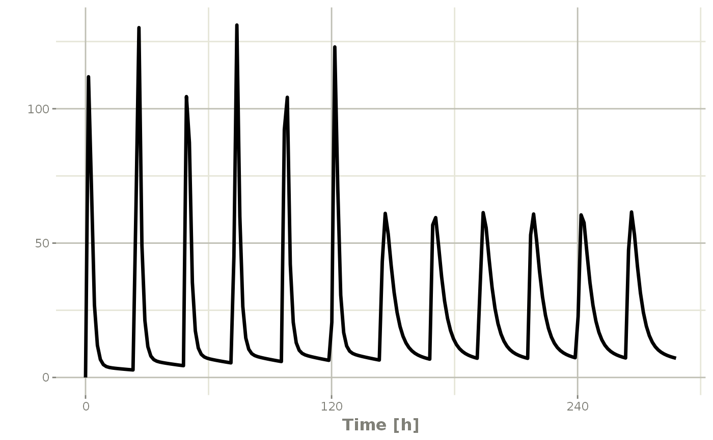
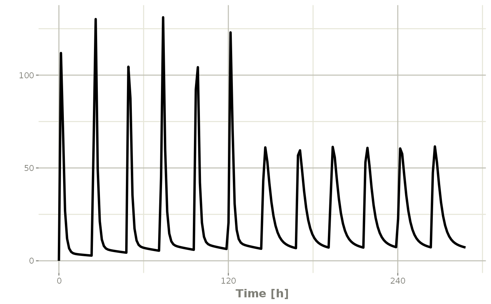

Event Table Function
et(x, ..., envir = parent.frame())
# S3 method for RxODE
et(x, ..., envir = parent.frame())
# S3 method for rxSolve
et(x, ..., envir = parent.frame())
# S3 method for rxParams
et(x, ..., envir = parent.frame())
# S3 method for default
et(
x,
...,
time,
amt,
evid,
cmt,
ii,
addl,
ss,
rate,
dur,
until,
id,
amountUnits,
timeUnits,
addSampling,
envir = parent.frame(),
by = NULL,
length.out = NULL
)Arguments
| x | This is the first argument supplied to the event table.
This is named to allow |
||||||||||||
|---|---|---|---|---|---|---|---|---|---|---|---|---|---|
| ... | Times or event tables. They can also be one of the named arguments below. |
||||||||||||
| envir | the |
||||||||||||
| time | Time is the time of the dose or the sampling times. This can also be unspecified and is determined by the object type (list or numeric/integer). |
||||||||||||
| amt | Amount of the dose. If specified, this assumes a dosing record, instead of a sampling record. |
||||||||||||
| evid | Event ID; This can be:
Note a reset event resets all the compartment values to zero and turns off all infusions. |
||||||||||||
| cmt | Compartment name or number. If a number, this is an integer starting at 1. Negative compartments turn off a compartment. If the compartment is a name, the compartment name is changed to the correct state/compartment number before running the simulation. For a compartment named "-cmt" the compartment is turned off. |
||||||||||||
| ii | When specifying a dose, this is the inter-dose interval
for |
||||||||||||
| addl | The number of additional doses at a inter-dose interval after one dose. |
||||||||||||
| ss | Steady state flag; It can be one of:
When All other values of |
||||||||||||
| rate | When positive, this is the rate of infusion. Otherwise:
When a modeled bioavailability is applied to positive rates
( If instead you want the modeled bioavailability to increase the
rate of infusion instead of the duration of infusion, specify the
|
||||||||||||
| dur | Duration of infusion. When |
||||||||||||
| until | This is the time until the dosing should end. It can be an easier way to figure out how many additional doses are needed over your sampling period. |
||||||||||||
| id | A integer vector of IDs to add or remove from the event table. If the event table is identical for each ID, then you may expand it to include all the IDs in this vector. All the negative IDs in this vector will be removed. |
||||||||||||
| amountUnits | The units for the dosing records ( |
||||||||||||
| timeUnits | The units for the time records ( |
||||||||||||
| addSampling | This is a boolean indicating if a sampling time
should be added at the same time as a dosing time. By default
this is |
||||||||||||
| by | When there are no observations in the event table, this
is the amount to increment for the observations between |
||||||||||||
| length.out | The number of observations to create if there isn't any observations in the event table. By default this is 200. |
Value
A new event table
References
Wang W, Hallow K, James D (2015). "A Tutorial on RxODE: Simulating Differential Equation Pharmacometric Models in R." CPT: Pharmacometrics \& Systems Pharmacology, 5(1), 3-10. ISSN 2163-8306, <URL: https://www.ncbi.nlm.nih.gov/pmc/articles/PMC4728294/>.
See also
eventTable, add.sampling,
add.dosing, et,
etRep, etRbind,
RxODE
Author
Matthew L Fidler, Wenping Wang
Examples
# \donttest{
library(RxODE)
library(units)
## Model from RxODE tutorial
mod1 <-RxODE({
KA=2.94E-01;
CL=1.86E+01;
V2=4.02E+01;
Q=1.05E+01;
V3=2.97E+02;
Kin=1;
Kout=1;
EC50=200;
C2 = centr/V2;
C3 = peri/V3;
d/dt(depot) =-KA*depot;
d/dt(centr) = KA*depot - CL*C2 - Q*C2 + Q*C3;
d/dt(peri) = Q*C2 - Q*C3;
d/dt(eff) = Kin - Kout*(1-C2/(EC50+C2))*eff;
});
#>
## These are making the more complex regimens of the RxODE tutorial
## bid for 5 days
bid <- et(timeUnits="hr") %>%
et(amt=10000,ii=12,until=set_units(5, "days"))
## qd for 5 days
qd <- et(timeUnits="hr") %>%
et(amt=20000,ii=24,until=set_units(5, "days"))
## bid for 5 days followed by qd for 5 days
et <- seq(bid,qd) %>% et(seq(0,11*24,length.out=100));
bidQd <- rxSolve(mod1, et)
plot(bidQd, C2)
 ## Now Infusion for 5 days followed by oral for 5 days
## note you can dose to a named compartment instead of using the compartment number
infusion <- et(timeUnits = "hr") %>%
et(amt=10000, rate=5000, ii=24, until=set_units(5, "days"), cmt="centr")
qd <- et(timeUnits = "hr") %>% et(amt=10000, ii=24, until=set_units(5, "days"), cmt="depot")
et <- seq(infusion,qd)
infusionQd <- rxSolve(mod1, et)
plot(infusionQd, C2)

## 2wk-on, 1wk-off
qd <- et(timeUnits = "hr") %>% et(amt=10000, ii=24, until=set_units(2, "weeks"), cmt="depot")
et <- seq(qd, set_units(1,"weeks"), qd) %>%
add.sampling(set_units(seq(0, 5.5,by=0.005),weeks))
wkOnOff <- rxSolve(mod1, et)
plot(wkOnOff, C2)
## Now Infusion for 5 days followed by oral for 5 days
## note you can dose to a named compartment instead of using the compartment number
infusion <- et(timeUnits = "hr") %>%
et(amt=10000, rate=5000, ii=24, until=set_units(5, "days"), cmt="centr")
qd <- et(timeUnits = "hr") %>% et(amt=10000, ii=24, until=set_units(5, "days"), cmt="depot")
et <- seq(infusion,qd)
infusionQd <- rxSolve(mod1, et)
plot(infusionQd, C2)

## 2wk-on, 1wk-off
qd <- et(timeUnits = "hr") %>% et(amt=10000, ii=24, until=set_units(2, "weeks"), cmt="depot")
et <- seq(qd, set_units(1,"weeks"), qd) %>%
add.sampling(set_units(seq(0, 5.5,by=0.005),weeks))
wkOnOff <- rxSolve(mod1, et)
plot(wkOnOff, C2)
 ## You can also repeat the cycle easily with the rep function
qd <-et(timeUnits = "hr") %>% et(amt=10000, ii=24, until=set_units(2, "weeks"), cmt="depot")
et <- etRep(qd, times=4, wait=set_units(1,"weeks")) %>%
add.sampling(set_units(seq(0, 12.5,by=0.005),weeks))
repCycle4 <- rxSolve(mod1, et)
plot(repCycle4, C2)
## You can also repeat the cycle easily with the rep function
qd <-et(timeUnits = "hr") %>% et(amt=10000, ii=24, until=set_units(2, "weeks"), cmt="depot")
et <- etRep(qd, times=4, wait=set_units(1,"weeks")) %>%
add.sampling(set_units(seq(0, 12.5,by=0.005),weeks))
repCycle4 <- rxSolve(mod1, et)
plot(repCycle4, C2)
 # }
# }